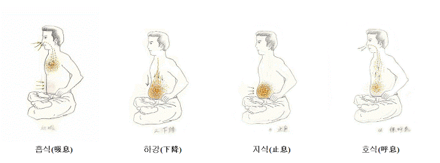

기본 호흡은 직통호흡이다. 직통호흡과 2단계 호흡의 가장 큰 차이점은, 직통호흡은 하단전을 부풀리며 숨을 곧장 하단전으로 내려보내지만, 2단계 호흡은 먼저 가슴에 호흡을 채운 뒤 다시 그것을 하단전 부위로 내려보낸다는 점이다.
2단계 호흡은 생명에너지를 더욱 깊이 있게 축적하기 위해 고안된 호흡법이다. 마치 무도를 하듯 호흡법을 단련해 나가는 수련이다 보니(무도에서 다른 것은 모두 빼고 호흡법만 남았다고 생각하면 된다), 준비운동이 중요해진다. 따라서 '행공 준비운동'과 '행공 정리운동'은 필수이다.
수련을 시작하기 전에 행공 준비운동을 한다. 준비운동은 경직된 부위를 풀어주고, 호흡을 하는 데 있어 원활한 움직임을 돕는 역할을 한다.
횡격막 부위를 풀어준다. 두 손끝을 가지런히 모은 뒤 왼쪽 갈비뼈 밑부터 3~4초 간격으로 꾹 눌렀다가 순간적으로 힘을 뺀다. 이렇게 지압 부위를 4~5등분하여 자리를 옮겨가며 명치 끝까지 지압해 준다. 오른쪽 횡격막도 동일하게 실시한다. 반드시 왼쪽부터 시작해야 한다.
그리고 주먹을 말아 쥐고 하단전을 30~35회 정도 두드려준다. 처음에는 살살 두드려주지만, 하단전이 튼튼해지면 탁탁 소리가 날 정도로 두드려주어도 무방하다.
폐를 빈틈없이 가득 채운 호흡을 하단전으로 내려보내다 보니 자연스럽게 심호흡이 되고, 호흡도 강력해질 수밖에 없다.
다만 그렇기 때문에 알게 모르게 신체에 무리를 줄 수 있다.
초심자의 경우 몽둥이로 두들겨 맞은 듯 아플 수 있다. 평소 자주 사용하지 않는 근육과 횡격막을 최대한 사용하기 때문이다. 딸꾹질이 나오는 경우도 있지만, 차차 적응된다.

흡식 시에는 위의 그림보다 아랫배(하단전)를 등 쪽으로 더욱 당겨주어야 한다. 호식의 경우에도 내쉬는 숨과 함께 아랫배를 등 쪽으로 서서히 당겨주다가, 호흡을 모두 내쉬었을 때는 아랫배가 등 쪽으로 바짝 당겨져 있어야 한다.
기본 호흡을 1분대에 연속해서 3~4회 무리 없이 할 수 있게 되면 2단계 호흡에 도전해 보는 것이 좋다.
호흡 비율은 흡:지:호 = 1:1:1이다. 즉, 20초를 들이마셨다면 20초를 멈추고, 20초를 내쉬는 식이다. 흡:지:호 = 1:0.5:1이라면 20초를 들이마시고, 15초를 멈춘 뒤 25초를 내쉰다. 즉, 호식을 조금 길게 잡거나 '지식(止息)'에 무리를 느낀다면 멈추는 시간을 줄여도 전혀 상관없다.
1분대 호흡이 넘어갈수록 연속호흡은 의미가 없다. 한 번 호흡한 뒤에는 휴식을 취한다. 열심히 한다면 30초~1분, 그냥 가만히 쉬거나 가벼운 직통호흡으로 잠깐 전환한다. 이것은 다소 팽팽한 상태이며, 지금은 2시간 수련에 3~4회 정도, 한 번씩 호흡한 뒤 쉬면서 반성을 하다 가끔 호흡이 필요할 때마다 한다.
숙달되면 호흡을 모두 내쉰 상태에서 그대로 '지식(止息)'에 들어간다. 즉, '2차 지식(止息)'이다. 물론 자신에게 맞지 않으면 생략해도 된다. 처음에는 당황스러울 수 있지만, 필자처럼 오히려 이 방법이 더 편한 사람들도 있다. 전체 호흡 시간이 자연스럽게 늘어나는 셈이다.
예) 흡:지:호:지 = 30:30:30:30 (합계 2분)
숙달되면 점차 1:2:1에 가깝도록 호흡량을 늘려가며 조절해 간다. 30초를 들이마셨다면 60초를 멈추고, 30초를 내쉬는 식이다. 이런 식으로 5분대 호흡도 가능해지며, '지식(止息)'만 30분 이상 하는 수련자들도 있다.
다만 호흡 멈추기 대회를 하는 것도 아니고, 이러면 바라문의 요가와 다를 바 없게 된다. 호흡은 마음을 보조하는 것이다. 이런 것에 정신이 팔려 극강의 호흡만 추구하게 되면 사후에 신선계(神仙界)나 천구계(天狗界)의 주민으로 입주신고를 하는 셈이니 주의를 요한다.
정법(正法)의 실천도 없었고, 깨달음에만 매몰되어 사랑이나 자비심이 전혀 없는 사람들이 모여 사는 곳이다. 생전의 육체 수행을 지속해 나가며 평안이 없다. 정법을 일러주어도 자신만의 길이 있다는 식이며, 자아가 강한 것이 특징이다.
수련을 마치면 행공 정리운동을 해야 한다. '추마요법(推摩療法)'을 참조하여 행공 정리운동으로 활용하면 된다. 행공으로 축적된 생명에너지를 신체에 골고루 파급시켜 주며, 담이 결리거나 몸이 불편해지는 것을 어느 정도 예방하고 치유해 주는 동작이다.
상기한 내용을 보면 2단계 호흡은 기본 호흡에 비해 까다롭고, 호흡을 멈추는 과정도 있으므로 욕심을 부리면 위험할 수 있다. 또한 생명에너지의 강렬한 체험에 이끌려 정도(正道)를 이탈할 우려도 있다.
필자 또한 한때는 자신이 대단한 사람이며 지고한 깨달음에 이르렀다고 착각한 적이 있었다. 그러나 결국 부처님 손바닥 안의 손오공보다도 못한 존재임을 깨달았다. 방편(方便)이 주(主)가 되면 이미 잘못된 것이다.
다만 이 호흡법을 기록으로 남기는 이유는 언젠가 누군가가 이를 과학적으로 밝혀낼 수도 있고, 필자처럼 반드시 필요한 사람이 나타날 수도 있다고 믿기 때문이다.
그러나 그것보다 더 중요한 것은 언제나 자신의 삶을 돌아보고 반성하는 것이다. 필자는 어떤 호흡법보다도 반성명상을 추구하는 것이 백 번 옳다고 생각한다.